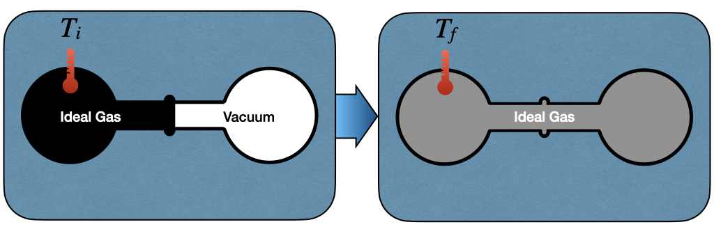
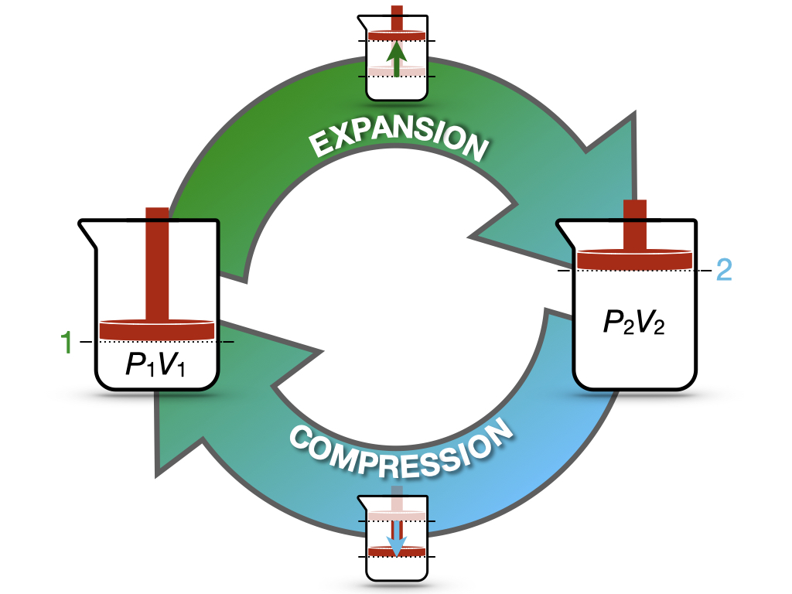

3 First Law of Thermodynamics
In chapter 2, we learned how to calculate heat and work, and we saw that both of them are path functions: their values depend on how a process is carried out. In this chapter, we will connect heat and work to a state function, the internal energy, and we will see how this connection becomes one of the most fundamental laws of nature, the first law of thermodynamics. Along the way, we will introduce a second state function, the enthalpy, which will be the protagonist of the next chapter.
3.1 Calculation of Internal Energy Changes
Energy is a property of a system that can be either transferred or converted. The internal energy (\(U\)) of a system is a thermodynamic state function defined as:
Definition 3.1 Internal Energy: The energy contained within the system, excluding kinetic energy and potential energy of motion and position of the system as a whole.
In the absence of chemical transformations, heat and work are the only two forms of energy that thermodynamics is concerned with. Keeping in mind Definition 1.1, which gives the convention for the signs of heat and work, the change in internal energy of a system can be written as:
\[ \Delta U = Q + W, \tag{3.1}\]
which we can write in differential form by considering that the internal energy is a state function, as: \[ dU = đ Q + đ W, \tag{3.2}\]
which, for processes where the pressure of the system equals the external pressure (as in the slow processes that we discussed in section 2.4, and in processes at constant pressure, where the system is in mechanical equilibrium with the atmosphere), using eq. 2.10 becomes:
\[ dU = đ Q - PdV. \tag{3.3}\]
3.1.1 Internal energy in isothermal processes
To study the behavior of the internal energy in a process at constant temperature (\(dT=0\)), James Prescott Joule (1818–1889) created the apparatus depicted in Figure 3.1.

The left side of the Joule apparatus’s inner chamber is filled with an ideal gas, while a vacuum is created in the right chamber. Both chambers are immersed in a water bath, whose temperature is monitored with a thermometer: if the gas absorbed or released any heat during the experiment, the temperature of the water would change. When the valve between the chambers is opened, the gas expands into the empty chamber and equilibrates. The work associated with the transformation is:
\[ đ W=-P_{\text{ext}}dV = 0, \tag{3.4}\]
since the gas expands into a vacuum, there is nothing for it to push against, and \(P_{\text{ext}}=0\). Thus, any change in internal energy must be due to heat, which can be detected by monitoring the temperature at the beginning, \(T_i\), and at the end of the experiment, \(T_f\). Joule observed that, for a gas behaving ideally, the temperature does not change, \(T_i = T_f\). Since the temperature doesn’t change, no heat is exchanged, and therefore the internal energy stays constant:
\[ dU = đ Q = 0. \tag{3.5}\]
Notice that Joule’s conclusion is valid only for an ideal gas. If we expand a real gas, we do notice a change in temperature associated with the expansion. A typical example of this behavior is when you use a pressurized spray bottle and release its content for an extended time in the air. The container will typically get colder. We will discuss this behavior in chapter 11 when we will study non-ideal gases.
From this simple experiment, we can conclude that the internal energy of an ideal gas depends only on its temperature.
3.1.2 Internal energy in adiabatic processes
An adiabatic process is defined as a process that happens without the exchange of heat. As such, \(đ Q=0\), and the work associated with an adiabatic process is equal to the change in internal energy:
\[ dU=đ W=-PdV, \tag{3.6}\]
which can then be calculated using the formulas that we derived in section 2.4. Notice that the work is still a path function: in general, its value depends on the path. However, along adiabatic paths, the work is fixed by the change of a state function, so all adiabatic paths connecting the same two states require the same amount of work. Notice also that isothermal and adiabatic are two very different processes. While an adiabatic process happens without the exchange of heat across the system’s boundaries, this does not mean that the system’s temperature does not change. Isothermal processes are usually associated with a heat transfer across the boundaries to maintain the temperature of the system constant. For adiabatic processes, it is quite the opposite since they are usually associated with a change in temperature.
3.1.3 Internal energy in isochoric processes
An isochoric process is a process in which the volume does not change. Therefore, \(đ W=0\), and \(dU = đ Q_V\), which using eq. 2.1, becomes:
\[ dU = đ Q_V = n C_V dT. \tag{3.7}\]
Since no work is performed at these conditions, the heat exchanged is equal to the change of a state function, \(\Delta U\). Once again, heat is still a path function in general, but along constant-volume paths its value is fixed by the initial and final states only. Eq. 3.7 also gives a mathematical justification of the concept of heat capacity at constant volume. \(C_V\) can now be interpreted as the partial derivative (a coefficient) of a state function (the internal energy):
\[ C_V = \left( \frac{\partial U} {\partial T} \right)_{V,n=1}, \tag{3.8}\]
where we have replaced the total derivative \(d\) with a partial one \(\partial\), and we have specified that the differentiation happens at constant volume and number of moles. Eq. 3.8 brings a rigorous definition of heat capacity at constant volume for 1 mol of substance:
Definition 3.2 The heat capacity of a substance, \(C_V\), represents its ability to absorb energy at constant volume.
3.1.4 Internal energy in isobaric processes
In an isobaric process, the pressure does not change, hence \(dP=0\). Unfortunately, eq. 3.2 for this case does not simplify further, as happened in the two previous cases. However, in section 2.3.2, we have introduced the useful concept of heat capacity at constant \(P\). \(C_P\) was used in an isobaric process in the same manner as \(C_V\) was used in the isochoric case. That is, as a coefficient to measure the amount of heat absorbed at constant pressure. Eq. 3.8 gave a mathematical definition of \(C_V\) as the partial derivative of a state function (the internal energy). But if heat capacities are coefficients, and coefficients are partial derivatives of state functions, how do we explain \(C_P\)? In order to do so, we can introduce a new state function, called the enthalpy (\(H\)), as:
\[ H = U + PV, \tag{3.9}\]
and its differential, calculated as:
\[ dH = dU + d(PV) = dU + PdV + \overbrace{VdP}^{0}, \tag{3.10}\]
which can be rearranged as:
\[ dU = dH -PdV. \tag{3.11}\]
Replacing eq. 3.11 into eq. 3.3:
\[ dH -PdV = đ Q_P - PdV, \tag{3.12}\]
which simplifies to:
\[ dH = đ Q_P = n C_P dT. \tag{3.13}\]
Eq. 3.13 establishes that the heat exchanged at constant pressure is equal to a new state function called the enthalpy, defined by eq. 3.9. It also establishes a mathematical justification of the concept of heat capacity at constant pressure. Similarly to \(C_V\), \(C_P\) can now be interpreted as the partial derivative (a coefficient) of the new state function (the enthalpy):
\[ C_P = \left( \frac{\partial H} {\partial T} \right)_{P,n=1}, \tag{3.14}\]
Eq. 3.14 brings also a rigorous definition of heat capacity at constant pressure for 1 mol of substance:
Definition 3.3 The heat capacity of a substance, \(C_P\), represents its ability to absorb enthalpy at constant pressure.
3.2 The First Law of Thermodynamics
We finally come to a working definition of the first law. If we take an isolated system—i.e., a system that exchanges neither energy nor mass with its surroundings—its internal energy is conserved. If the internal energy is conserved, \(dU=0\). Therefore, for an isolated system:
\[ đ Q = -đ W, \tag{3.15}\]
and heat and work can be easily calculated using any of the appropriate formulas introduced in either section 2.4 or section 2.3.
The first law is a conservation law. It is intuitive since it comes directly from Lavoisier’s principle of “nothing is lost, nothing is created, everything is transformed.” Considering that the only system that is truly isolated is the universe, we can condense the first law in one simple sentence:
Definition 3.4 First Law of Thermodynamics: The energy of the universe is conserved.
3.3 Reversible and Irreversible processes
Let’s now consider the cycle in Figure 3.2. The process in this case starts from state 1 (system at \(P_1V_1\)), expands to state 2 (system at \(P_2V_2\)), and compresses back to state 1 (system back to \(P_1V_1\)).

Since the process starts and finishes at the same state, the value of the internal energy at the end of the process will be the same as its value at the beginning, regardless of the path:1
\[ \oint dU=0, \tag{3.16}\]
where the symbol \(\oint\) indicates an integral around a cycle. Considering the work associated with the cycle, however, the situation is radically different because it depends on the path that the system is taking, and in general \[ \oint_{\text{path}} đW \neq 0. \tag{3.17}\]
For instance, if we perform the expansion in one step, the work associated with it will be (using eq. 2.14):2
\[ W^{\text{expansion}}_{\text{1-step}}=-P_2(\underbrace{V_2-V_1}_{>0})<0, \tag{3.18}\]
and if we also perform the compression in 1-step:3
\[ W^{\text{compression}}_{\text{1-step}}=-P_1(\underbrace{V_1-V_2}_{<0})>0. \tag{3.19}\]
With a little bit of math, it is easy to prove that the total work for the entire cycle is:
\[ \begin{aligned} W^{\text{cycle}}_{\text{1-step}} {} & = W^{\text{expansion}}_{\text{1-step}}+W^{\text{compression}}_{\text{1-step}} \\ & = -P_2(V_2-V_1)-P_1(V_1-V_2) \\ & = -P_2(V_2-V_1)+P_1(V_2-V_1) \\ & = (\underbrace{V_2-V_1}_{>0})(\underbrace{P_1-P_2}_{>0}) > 0, \end{aligned} \tag{3.20}\]
or, in other words, the surroundings have to put more work into the compression than they get back from the expansion. Since the gas returns to its initial state, \(\oint dU=0\), and this extra work must leave the system as heat. The energy is not destroyed, but part of the work has been degraded into heat.
In practice, if we want to manually perform this cycle by pushing on the piston by hand, we will notice that it requires more energy to push down than the amount it gives back when we release it, and it moves back up.
In contrast, if both the expansion and the compression happen in a slow \(\infty\)-step manner, the work associated with them will be \(W_{\text{max}}\) and \(W_{\text{min}}\), respectively, which are calculated using eq. 2.20. The total work related to the cycle will be in this case:
\[ \begin{aligned} W^{\text{cycle}}_{\infty\text{-step}} {} & = W^{\text{expansion}}_{\text{max}}+W^{\text{compression}}_{\text{min}} \\ & = -nRT \ln \frac{V_f}{V_i}-nRT \ln \frac{V_i}{V_f} \\ & = -nRT \underbrace{\left( \ln \frac{V_f}{V_i} - \ln \frac{V_f}{V_i} \right) }_{=0} = 0, \end{aligned} \tag{3.21}\]
which means that, in this case, the work obtained from the expansion is exactly the work needed for the compression, and no work is degraded into heat.
In practice, if we were able to perform this cycle manually by pushing the piston down by hand, we would notice that it requires the same amount of energy to push down as the amount it gives back when it moves up.
This process can happen both ways without losses, and is called reversible:
Definition 3.5 Reversible process: A process whose direction can be inverted at any moment by an infinitesimally small change in the conditions of the surroundings (for example, an infinitesimally small increase of the external pressure), so that the system goes back through exactly the same states.4
A few important considerations can be made by analyzing Definition 3.5:
- A reversible process is infinitely slow. It happens in an infinite number of infinitesimal steps, and at each step the system is in equilibrium with its surroundings (for example, \(P=P_{\text{ext}}\) at every moment).
- A reversible process is the most efficient one. A reversible expansion gives the maximum work, \(W_{\text{max}}\), and a reversible compression requires the minimum work, \(W_{\text{min}}\). Running a reversible process forward and then backward leaves no trace, neither in the system nor in the surroundings.
- All real processes are irreversible. Reversible processes are idealizations, like the ideal gas. We can approach them by carrying out a process very slowly, but never reach them. Despite this, they are extremely useful, since they set the limits that real processes can only approach.
3.4 Chapter Review
3.4.1 Study Questions
1. What is the internal energy of a system?
- The kinetic energy of the system as a whole.
- The energy contained within the system, excluding the kinetic and potential energy of the system as a whole.
- The heat stored in the system.
- The work that the system can perform.
- The potential energy of the system in a gravitational field.
2. What is the first law of thermodynamics in differential form for a closed system?
- \(dU = đQ + đW\).
- \(dU = đQ - đW\).
- \(dU = TdS\).
- \(dU = 0\) always.
- \(dU = PdV\).
3. What did Joule conclude from the expansion of an ideal gas into a vacuum?
- The gas cools down during the expansion.
- The gas performs work on the surroundings.
- Heat flows into the gas.
- The internal energy of an ideal gas depends only on its temperature.
- The internal energy of an ideal gas depends on its volume.
4. What characterizes an adiabatic process?
- The temperature is constant.
- The volume is constant.
- The pressure is constant.
- The internal energy is constant.
- No heat is exchanged, so \(dU = đW\).
5. How does the internal energy change in an isochoric process?
- \(dU = -PdV\).
- \(dU = 0\).
- \(dU = n C_V dT\).
- \(dU = n C_P dT\).
- \(dU = đW\).
6. How can the heat capacity at constant volume be written as a derivative of a state function?
- \(C_V = \left(\frac{\partial U}{\partial T}\right)_V\) (for 1 mol).
- \(C_V = \left(\frac{\partial H}{\partial T}\right)_P\) (for 1 mol).
- \(C_V = \left(\frac{\partial U}{\partial V}\right)_T\).
- \(C_V = \left(\frac{\partial T}{\partial U}\right)_V\).
- \(C_V = \left(\frac{\partial P}{\partial T}\right)_V\).
7. What is the definition of enthalpy?
- \(H = U - PV\).
- \(H = U + TS\).
- \(H = Q + W\).
- \(H = U + PV\).
- \(H = U - TS\).
8. To which quantity is the heat exchanged at constant pressure equal?
- The change in internal energy, \(\Delta U\).
- The change in enthalpy, \(\Delta H\).
- The work, \(W\).
- Zero.
- The change in temperature, \(\Delta T\).
9. An ideal gas is expanded in one step and then compressed back in one step. What is the total work of this cycle?
- Zero, since the gas returns to its initial state.
- Negative, since net work is performed by the gas.
- It is equal to the change in internal energy.
- It cannot be calculated.
- Positive, since more work is spent compressing the gas than is obtained from the expansion.
10. What is the total work of an expansion–compression cycle of an ideal gas performed reversibly, in infinitely many steps, at constant temperature?
- Positive.
- Negative.
- Zero.
- Infinite.
- Equal to \(nRT\).
recall that the internal energy is a state function, so its value depends exclusively on the conditions at the beginning and at the end. In a cycle, we’re going back to the same point, so the conditions at the beginning and at the end are equal by definition.↩︎
notice that the work for the expansion is negative, as it should be.↩︎
notice that the work for the compression is positive, as it should be.↩︎
Adapted from: Sears, F.W. and Salinger, G.L. (1986), Thermodynamics, Kinetic Theory, and Statistical Thermodynamics, 3rd edition (Addison-Wesley).↩︎